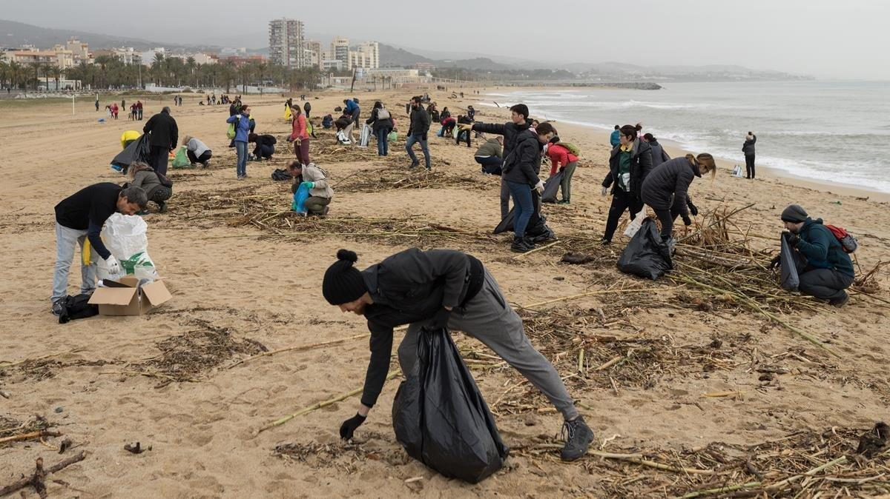

A pesar de los importantes avances tecnológicos y científicos de los últimos tiempos, una de cada tres personas en el mundo carece de acceso a los recursos más elementales en materia de saneamiento; esto incluye a 946 millones que no cuentan con un lugar adecuado para hacer sus necesidades fisiológicas básicas. Según un estudio de la OMS y UNICEF, 9 de cada 10 personas ya tienen acceso a fuentes mejoradas de agua potable, sin embargo, solamente el 68 % de la población mundial accede a instalaciones de saneamiento. Por ello una de las principales metas de desarrollo sostenible para los próximos 15 años será promover el acceso universal a estos servicios y en particular, acabar con la defecación al aire libre.
